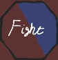

Onko tapahtumia/organisaatioita, joita täällä pitäisi näkyä?
Ilmoita tänne lomakkeeseen tapahtumia/organisaatioita, joita haluaisit tämän sivuston seuraavan
Ilmoita tapahtuma/organisaatio
Tähdellä (*) merkityt ovat pakollisia

Ilmoita tänne lomakkeeseen tapahtumia/organisaatioita, joita haluaisit tämän sivuston seuraavan
Tähdellä (*) merkityt ovat pakollisia